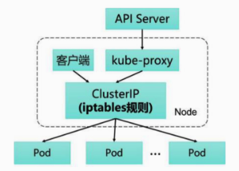
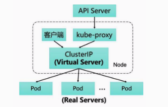

Kubernetes & Docker 网络原理（三）
Apr 13, 2020
为了支持集群的水平扩展、高可用性，Kubernetes抽象出了Service的概念。Service是对一组Pod的抽象，它会根据访问策略（如负载均衡策略）来访问这组Pod。 Kubernetes在创建服务时会为服务分配一个虚拟的IP地址，客户端通过访问这个虚拟的IP地址来访问服务，服务则负责将请求转发到后端的Pod上。起到一个类似于反向代理的作用，但是它和普通的反向代理还是有一些不同：首先，它的Service 的 IP 地址，也就是所谓的 ClusterIP 是虚拟的，想从外面访问还需要一些技巧；其次，它的部署和启停是由Kubernetes统一自动管理的。
Service 和 Pod 一样，其实仅仅是一个抽象的概念，背后的运作机制是依赖于 kube-proxy 组件实现的。
在 Kubernetes 集群的每个 Node 上都会运行一个 kube-proxy 服务进程，我们可以把这个进程看作 Service 的透明代理兼负载均衡器，其核心功能是将到某个 Service 的访问请求转发到后端的多个 Pod 实例上。此外，Service的Cluster IP与 NodePort 等概念是 kube-proxy 服务通过iptables的NAT转换实现的，kube-proxy 在运行过程中动态创建与 Service 相关的 iptables 规则，这些规则实现了将访问服务（Cluster IP或NodePort）的请求负载分发到后端 Pod 的功能。由于 iptables 机制针对的是本地的 kube-proxy 端口，所以在每个 Node 上都要运行 kube-proxy 组件，这样一来，在 Kubernetes 集群内部，我们可以在任意 Node 上发起对 Service 的访问请求。综上所述，由于 kube-proxy 的作用，在 Service 的调用过程中客户端无须关心后端有几个 Pod，中间过程的通信、负载均衡及故障恢复都是透明的。
kube-proxy 的具体运行模式其实是随着 Kubernetes 版本的演进有着较大的变化的，整体上分为以下几个模式的演化：
userspace 模式
kube-proxy 最早的工作模式便是 userspace 用户空间代理模式，在这种模式下 kube-proxy 是承担着真实的 TCP/UDP 代理任务的，当 Pod 通过 Cluster IP 访问 Service 的时候，流量被 iptables 拦截后转发到节点的 kube-proxy 进程，服务的路由信息通过 watch API Server 进行获取，然后 kube-proxy 进程再与具体的 Pod 建立 TCP/UDP 连接，从而将请求发送给 Service 的后端 Pod 上，在这个过程中实现负载均衡。
iptables 模式
从 kubernetes 1.2 版本开始不再采用 userspace 用户空间代理模式，取而代之的是 iptables 模式，在 iptables 模式下 kube-proxy 不再担任直接的 proxy 作用，它的核心职责变为：一方面通过 watch API Server 实时获取 Service 与 Endpoint 的变更信息，然后动态地更新 iptables 规则，然后流量会根据 iptables 的 NAT 机制直接路由到目标 Pod，而不是再去单独建立连接。

与之前的 userspace 模式相比，iptables 模式完全工作在内核态，不需要切换到用户态的 kube-proxy，避免了内核态用户态的频繁切换使得性能相比之前有所提高。
但是 iptables 也存在着局限性，就是由于 iptables 客观因素，当 Kubernetes 集群规模扩大，Pod 数量大量增加之后，iptables 的规则数量会随之急剧增加，进而导致其转发性能的下降，甚至会出现规则丢失的情况（故障非常难以重现和排查），因此 iptables 模式也有待于改进。
IPVS 模式
IPVS 模式即 IP Virtual Server 模式，在 Kubernetes 1.11中 IPVS 模式升级为 GA，IPVS 虽然和 iptables 都是基于 Netfilter 实现，但是定位有着本质不同，iptables 设计为防火墙使用，而 IPVS 用于高性能负载均衡，而且从规则的存储角度，IPVS 采用的是 Hash Table 结构，因此理论上讲更适合在不影响性能的情况下大规模地扩展，同时 IPVS 支持比 iptables 更复杂的负载均衡算法（最小负载/最小连接数/加权等），支持服务器健康检查和连接重试等功能，另外还可以动态修改 ipset 集合。

在 IPVS 模式下，并不是就直接抛弃 iptables 了，虽然 IPVS 在性能上肯定是要优于 iptables 的，但同时也有许多功能 IPVS 相比 iptables 是缺失的，比如包过滤、地址伪装、SNAT 等功能，因此在一些场景下是需要 IPVS 与 iptables 配合工作的，比如 NodePort 实现。同时在 IPVS 模式下，kube-proxy 使用的是 iptables 的扩展 ipset，而不是直接通过 iptables 生成规则链。iptables 规则链是线性的数据结构，而 ipset 是带索引的数据结构，因此当规则很多时，可以高效地匹配查找。